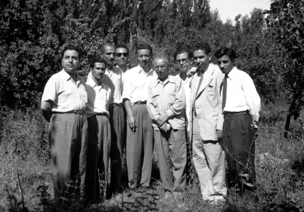

Iran Party
Iran Party was the main party in the loose coalition of the nationalists who supported Mossadiq under the name of the National Front. Asghar Parsa joined this party after his return from China. After the 1953 coup, he remained in the party, although the party's activities were limited due to the heavy SAVAK suppression. This is a picture from late 1950's. It shows a group of Iran Party members at Dr. Bijan's orchard in Afjeh, a small town near Tehran. |

|